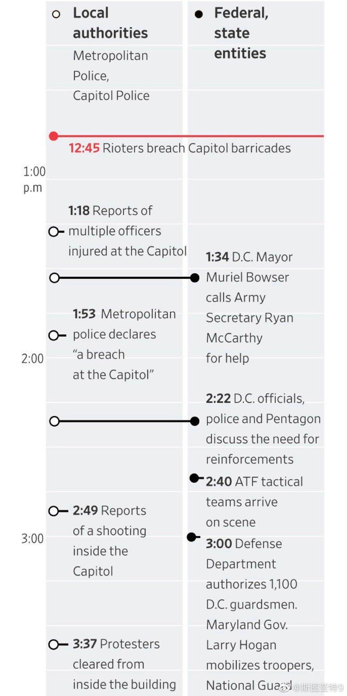
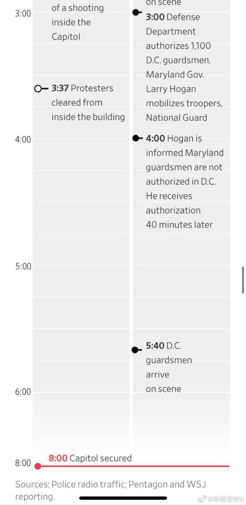

WSJ梳理了暴乱当天讨论增援的过程。代理国防部长为什么支持不批准国民警卫队增援还是个这次最大的谜。下午1:34 DC市长要求国防部增援，3:00国防部长才批准，4:40才批准其他州国防警卫队增援，而DC国防警卫队5:40才到达。很难说代理国防部长迟迟不批准的原因是什么。几个月前川普用军队镇压示威活动，在军队内外的批评声都很多，也许代理国防部长只是尽量避免背类似的骂名。也可能川粉们说了好几个星期建议川普实行军管抓人，代理国防部长希望军队尽量不介入避这个嫌。也可能仅仅是因为官僚且无能无法做出快速反应。当然也不能完全排除恶意拖延的可能性，虽然我还是觉得可能性不大。
- 
- 